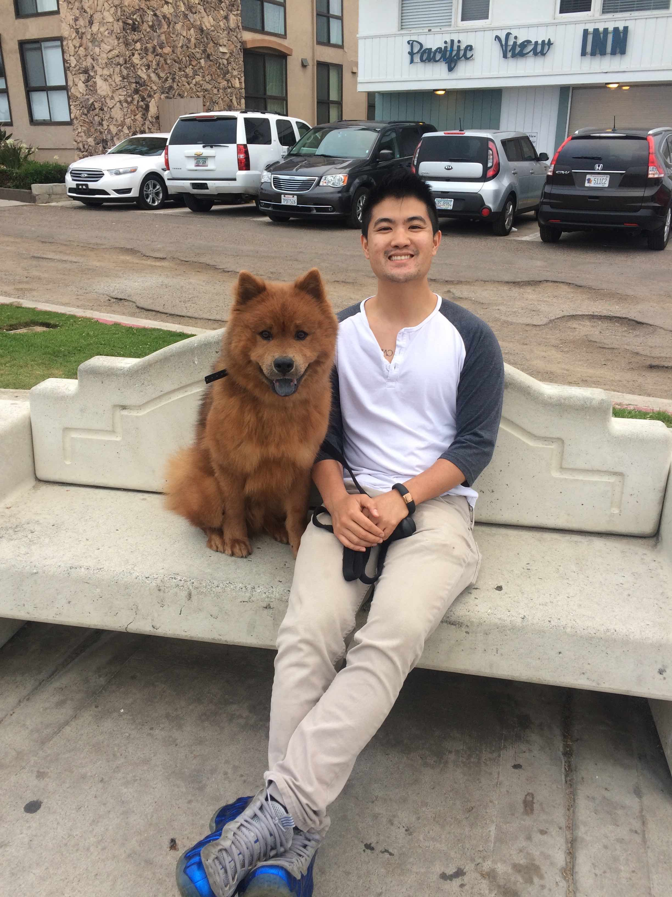

About Me
Kelson Quan is a product manager in the San Francisco Bay Area. He has a strong passion for enterprise mobile as it brings him great joy to see users empowered by technology in the workplace. He believes in the entrepreneurial spirit and potential in all people and applies that belief to all companies and teams he works with. He has 3 years of experience in product management roles with a focus on B2B and mobile. However, he has a passion for consumer mobile apps demonstrated by his numerous projects including a travel app and recipes app.
>As a former collegiate tennis player, he has a strong passion for health and fitness. Academically he has a love for data especially when its about his favorite topics in sports analytics and the financial markets. He hopes to work somewhere where these interests and skills align.
Currently, he is working on his computer programming certification at UC Berkeley. Please feel free to contact me, I am always down for a coffee! You can visit my LinkedIn here